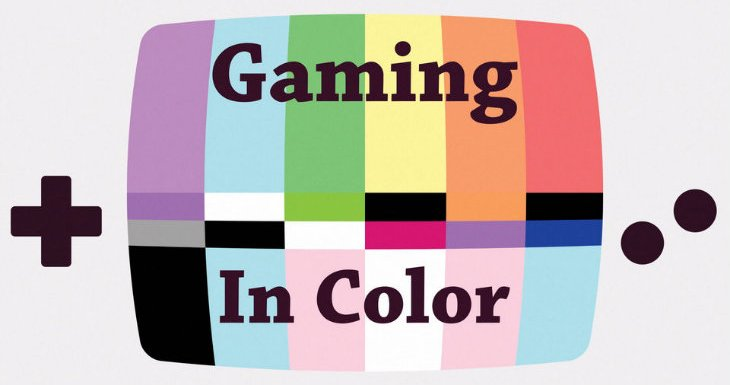

The Need For Queer Narratives: A Response to "Gaming in Color"
When I first heard of the documentary Gaming in Color, I fully intended to watch the documentary and write a review, listing out a bunch of reasons why I think gamers and non-gamers alike should watch it. As I made my way through the film, however, I soon realized that that’s not really what I wanted to write about. That wouldn’t be very truthful to the experience I had while watching it. I wanted to write about my own experiences as a gay gamer and how I felt about a lot of the points brought up in Gaming in Color.
Gaming in Color is a an hour long documentary about the LGBTQ experience in video games and gaming culture which came out in April 2014. It was funded by a Kickstarter campaign in 2013 and features interviews with many prominent gaming industry professionals and queer gamers. A large part of the documentary also focuses on GaymerX, the first ever LGBTQ focused gaming convention, held for the first time last year. (Read more about the documentary and the people behind it on the Gaming in Color website.)
“Gaming provides young gay people who may not be comfortable with themselves an outlet to be themselves that is totally forgiving, totally accepting, and you get to be anyone you want to be.”
I may not be a prolific gamer by any standards, but one of the few games that allowed me to create a character that felt anything like me was the Sims. I had wanted to play the Sims since I was probably a tiny 11 or 12 year old geekling, looking over my friends shoulders when “we” played it at their house (they played, I watched), wanting so badly to be able to play the game. My best friend at the time thought some of the things she could do in-game were so scandalous. I don’t think I fully understood at the time, but I saw the potential for me to be whoever I wanted in-game. Unlike books or movies or TV shows, where I was forced to live through yet another straight character’s experiences, the Sims and games in general allowed me to pretend to be whomever I wanted to be. It didn’t matter that I was a tiny, Latina, immigrant, young girl who was maybe questioning the specifics of her identity.
I could be whomever I wanted to be.
I didn’t have to adhere to the stories that I consumed. I could change them. Fanfiction and fandom were incredibly important to me as a teenager because they provided the space that I needed to explore this giant sandbox of stories and characters the world had laid at my feet and explore my own identity in a way that felt safe and non-threatening.
“I want someone who represents me on the screen and it’s not really about sexuality as it is about representation.”
It’s important for young queer people to be able to learn about and experience stories about people who they feel they can relate to. Even though I consider myself fairly well-adjusted and comfortable with who I am now, my heart still gives a painful thump when I see queer people, especially queer women – hell, especially queer women of color – represented, because I know that even though it doesn’t make a life-changing difference for me today, it does for other young queer people who are in the same place in their lives that I was five, ten years ago. The sense of kinship that comes from knowing other people know at least a little bit of what you’re going through, that you’re not as alone as you might feel – that’s huge.
Constantly having to hide an integral part of your identity, for whatever reason – be it due to cultural pressures, family pressures, to protect your safety, or to protect your livelihood – is extremely difficult. Anything that can lessen the difficulty is welcome, and for a lot of people, games are that outlet. For a lot of people, games could become that outlet, but most would agree that maybe games have to grow up a little first.
“I think we’re going to see this medium mature, see it diversify, we’re going to see all kinds of people make their own games. I really believe that a lot of the ways that we think about games and the dominant genres of games are going to shift.”
Does that mean I think every game needs to include an overt queer narrative or queer perspective? No, not exactly. Do games need to expand beyond the typical heteronormative and male narratives that we see again and again and again? Yes, that would be a great change. Does the gaming community as a whole need to move past the myopic idea that playing as anything other than a straight, white man is the only way to play? Yes, absolutely!
Gaming in Color presents the idea that a queer game narrative can simply be creating a world, creating characters, or creating a story that more fully represents the diversity of the people who play those games, as well as not railroading players into a fixed gender or sexuality role. Sandbox games that are not story-driven and MMOs that are gamer-driven are great examples of games that allows players to explore the narratives they want to experience.
The fact that documentaries like Gaming in Color and gaming conventions like GaymerX exist are proof that need for these discussions is out there.
June is LGBTQ pride month (more commonly known as Gay Pride Month) – if you do nothing else to celebrate, make a point to watch Gaming in Color! The documentary is available for pay what you like (mininum $1, suggested price of $15). If you want to check out even more resources and related articles about LGBTQ issues, the references below are a great place to start.
“Visibility is the way in which an industry says that we know that you exist. When you get acknowledgement that you are the intended audience for something, it makes you feel like you’re a part of it.”